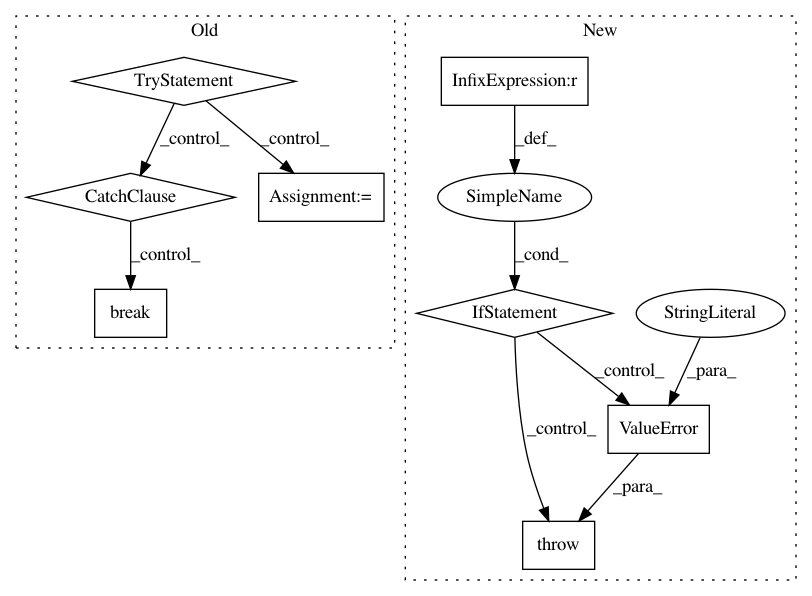

4257bd12136ce3a135a4fab4ad0667dfccf8368d,variables.py,,get_tt_variable,#Any#Any#Any#Any#Any#Any#Any#Any#,7
Before Change
with tf.variable_scope(name):
i = 0
while True:
try:
curr_core_var = tf.get_variable("core_%d" % i,
dtype=dtype, trainable=trainable,
collections=collections,
caching_device=caching_device)
variable_cores.append(curr_core_var)
i += 1
except ValueError as e:
if i == 0:
// The variable doesn"t exist or it does but scope.reuse == False,
// raise ValueError.
raise e
else:
// We found all the cores, the i-th core doesn"t exist.
break
// TODO: restore all attrubutes as well.
v = tensor_train.TensorTrain(variable_cores, convert_to_tensors=False)
else:
// Create new variable.
with tf.variable_scope(name):
After Change
if v.name == path:
found_v = v
break
if found_v is None:
raise ValueError("ValueError: Variable does not exist, or was not "
"created with t3f.get_tt_variable(). Did you mean to "
"set reuse=None in VarScope?")
with tf.variable_scope(name):
// Try to get the first core through tf.get_variable to check that we don"t
// violate reuse: it will raise a ValueError otherwise.
tf.get_variable("core_0")
In pattern: SUPERPATTERN
Frequency: 3
Non-data size: 8
Instances
Project Name: Bihaqo/t3f
Commit Name: 4257bd12136ce3a135a4fab4ad0667dfccf8368d
Time: 2017-02-03
Author: novikov@bayesgroup.ru
File Name: variables.py
Class Name:
Method Name: get_tt_variable
Project Name: snorkel-team/snorkel
Commit Name: 534a7f20e28abe53a29033344a8a34f3cda22636
Time: 2018-08-03
Author: catalin@cs.stanford.edu
File Name: snorkel/udf.py
Class Name: UDFRunner
Method Name: apply_mt
Project Name: chainer/chainercv
Commit Name: babf7c9f50282143ab8efee96a587bf5cb74123f
Time: 2017-06-01
Author: yuyuniitani@gmail.com
File Name: chainercv/evaluations/eval_semantic_segmentation_iou.py
Class Name:
Method Name: calc_semantic_segmentation_confusion